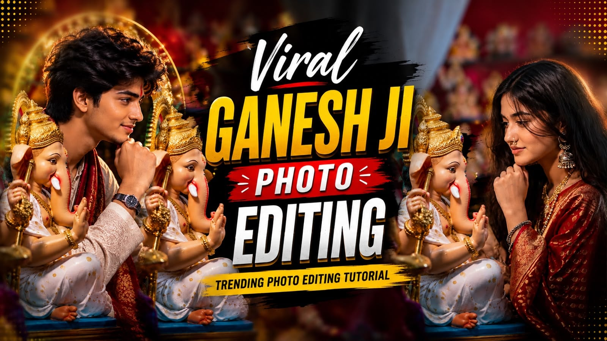
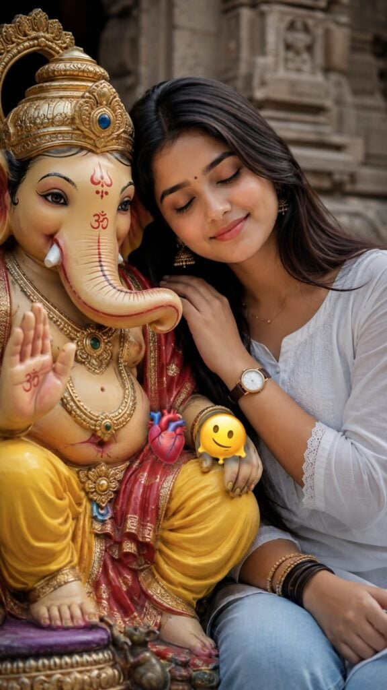
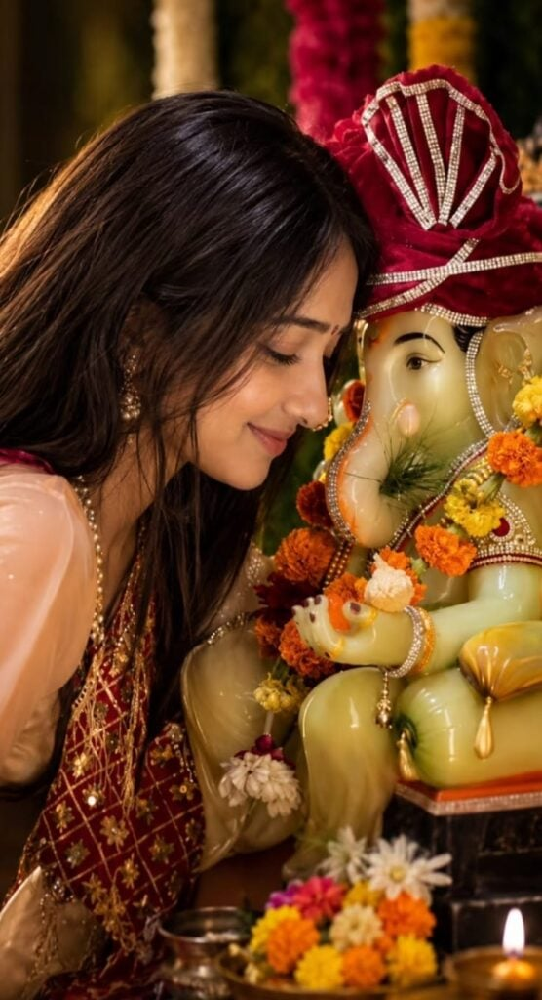
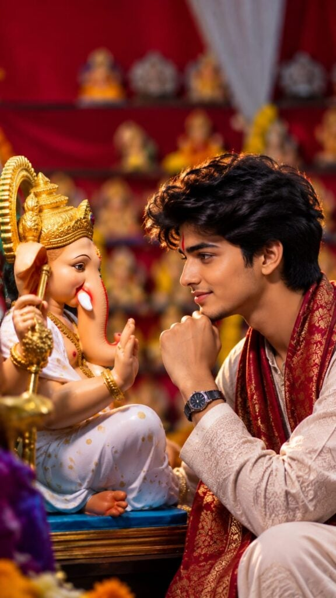

Home / Create Photo With Ganesh Ji Photo Editing Prompts
Create Photo With Ganesh Ji Photo Editing Prompts
By Prompt Library•12 August 2026

Every year before Ganesh Chaturthi, I see the same thing happening on Instagram and WhatsApp status. People post photos where they are standing next to Ganesh Ji, or sitting in front of him with folded hands, and the lighting looks so real that it feels like a temple photoshoot. Most of these are not real photos. They are made with AI photo editing prompts.
Want more awesome prompts?
Join our community and get the latest viral prompts daily.
Use the uploaded image as the ONLY identity reference for the girl. Preserve her facial identity, face shape, eyes, eyebrows, nose, lips, skin tone, hairstyle, bindi, and natural features exactly. Create a photorealistic 4:5 vertical portrait showing exactly half of her face beside exactly half of Lord Ganpati Bappa’s face, their faces gently touching. Align one human eye and one Ganpati eye at the center, both extremely sharp and expressive. Add realistic skin texture, detailed eyelashes, natural hair strands, intricate Ganpati crown and jewelry, authentic devotional markings, and warm golden cinematic lighting. Keep the background minimal and softly blurred. Use natural colors, realistic shadows, premium DSLR photography, shallow depth of field, and an emotional devotional atmosphere. Add elegant golden-white text at bottom: “Ganpati Bappa Morya 🪷❤️”.

? AI PROMPT
A medium close-up shot captures a young South Asian woman with long, dark wavy hair, leaning her head gently against a detailed, colorful statue of the Hindu deity Ganesha. The woman has a serene expression with her eyes closed, wearing a simple white top and light blue jeans. She is positioned on the right side of the frame, resting her hand near the statue. The Ganesha idol, seated on the left, is intricately adorned with a gold crown, opulent gold jewelry, and a vibrant red and yellow dhoti, with its trunk turned to the left and one hand raised in a gesture of blessing. The background consists of architectural stone elements, suggesting an outdoor temple or courtyard setting. The lighting is soft and diffused, creating a peaceful, devotional atmosphere. A small, floating anatomical heart emoji and a melting smiley face emoji are present near the center of the composition. The overall aesthetic is warm and candid, focusing on the intimate and respectful connection between the woman and the sacred figure.

? AI PROMPT
Create an ultra-realistic cinematic vertical portrait of the SAME young Indian woman from the reference image, sitting closely beside a beautifully decorated Lord Ganesha idol during a traditional Ganesh Puja celebration.
Woman — strict identity and appearance:
Preserve the woman's natural facial appearance from the reference image, including her face shape, eyes, eyebrows, nose, lips, skin tone, and overall facial proportions. She has long, naturally straight, dark black hair with realistic individual strands, warm medium Indian skin tone, a small subtle black/red bindi, natural eyebrows, soft eyelashes, minimal makeup, and natural pink lips. Her expression is peaceful and gentle, with a subtle closed-mouth smile. Her eyes are softly lowered as she lovingly looks toward Lord Ganesha.
Pose her on the left side of the frame, leaning naturally and respectfully toward the Ganesha idol, with her face captured in a beautiful side-profile/three-quarter angle. Keep the pose intimate, graceful, devotional, and realistic.
Clothing and jewelry:
She wears an elegant traditional Indian outfit consisting of a soft peach/pink blouse with a richly embroidered deep maroon-red dupatta draped naturally over her shoulder. The dupatta has intricate golden floral embroidery and delicate shimmering threadwork. Add traditional gold jhumka earrings and a very delicate gold necklace. Keep the jewelry realistic and subtle.
Lord Ganesha:
Place a large, beautifully decorated Lord Ganesha idol immediately beside her on the right side of the frame. The idol has a realistic light greenish-golden complexion, peaceful expressive eyes, a naturally curved trunk, and a serene divine expression.
Ganesha wears a luxurious deep maroon/red traditional turban with intricate silver-white rhinestone and jeweled patterns. Decorate the idol with realistic orange, yellow, red, white, and maroon flower garlands, traditional jewelry, sparkling ornaments, and festive embellishments.
Festive environment:
Create a traditional Ganesh Chaturthi/Ganesh Puja setting filled with fresh marigold flowers and other colorful flowers. Include flower offerings, a brass puja vessel, a traditional diya with a small warm flame, and subtle festive decorations in the foreground and background.
Lighting and color:
Use natural, realistic colors with accurate skin tones and authentic fabric colors. Avoid heavy orange, yellow, red, or cinematic color grading. Keep saturation moderate and realistic, with slightly soft contrast and naturally balanced highlights and shadows.
Use soft warm ambient light that resembles real indoor festive lighting, while maintaining natural white balance. Skin should look natural and realistic, not overly smooth or orange. Preserve realistic blacks, whites, greens, reds, and skin tones.
Photography:
Ultra-realistic professional DSLR photography, natural documentary-style festive photography, 85mm portrait lens, f/1.8, shallow depth of field, realistic optical bokeh, natural background separation, high dynamic range, realistic skin pores and texture, detailed individual hair strands, authentic fabric texture, realistic flowers and jewelry, subtle reflections, natural shadows.
Composition should closely resemble a real photograph: woman occupying the left side and Ganesha prominently positioned on the right, both faces clearly visible and sharply focused. Include some foreground flowers and the diya for depth.
Overall mood:
Peaceful, devotional, intimate, elegant, authentic Indian festive atmosphere. The image should look like a real photograph captured during Ganesh Puja—not an AI-generated image, painting, illustration, or overly processed cinematic artwork.
Aspect ratio: 9:16 vertical.
Negative prompt:
No excessive saturation, no high contrast, no orange color cast, no dramatic teal-and-orange grading, no HDR overprocessing, no plastic skin, no excessive beauty filter, no cartoon effect, no painting effect, no artificial face, no distorted facial features, no extra fingers, no malformed hands, no duplicated jewelry, no unrealistic flowers, no text, no watermark.

? AI PROMPT
Create an ultra-realistic cinematic vertical portrait of a young Indian man sitting peacefully beside a beautifully decorated Lord Ganesha idol during a festive celebration.
The young man should have a natural, handsome appearance with short, slightly wavy black hair, realistic facial features, warm medium Indian skin tone, subtle stubble, and a calm, gentle expression. He is looking directly toward Lord Ganesha with a peaceful devotional gaze. Pose him in a similar intimate composition, sitting close to the idol with one hand gently resting near his chin, creating a natural emotional connection between the boy and Lord Ganesha.
He is wearing a traditional ivory/cream embroidered kurta with intricate subtle patterns, paired with a rich maroon-red and gold traditional stole/dupatta draped elegantly around his shoulders. Add a simple traditional wristwatch and minimal accessories. His clothing should have realistic fabric texture, detailed embroidery, natural folds, and premium festive styling.
Beside him, place a beautifully crafted Lord Ganesha idol wearing a white traditional outfit with small golden motifs, an elaborate golden crown, traditional jewelry, and detailed ornaments. Ganesha should have a peaceful and adorable expression, positioned facing the young man as if they are sharing a quiet devotional moment.
Set the scene inside a richly decorated Indian Ganesh festival or temple setting. Use deep red fabric in the background, multiple small Ganesh idols and decorative elements placed on shelves, warm golden ornaments, subtle marigold flowers, and softly glowing festive lights. Keep the entire background heavily blurred with creamy cinematic bokeh.
Use warm, soft, directional lighting with a subtle golden rim light around the boy's hair and shoulders. Highlight realistic skin texture, individual hair strands, detailed kurta embroidery, jewelry, Ganesha's craftsmanship, and natural shadows.
Professional DSLR photography, 85mm portrait lens, f/1.8 aperture, shallow depth of field, cinematic color grading, realistic proportions, natural skin tones, HDR, sharp facial details, soft background bokeh, photorealistic quality, emotional devotional atmosphere, premium Indian festive photography, 9:16 vertical composition, ultra-high resolution.
I get a lot of messages asking how this is done, so I am writing this article to explain it properly. I have tested these prompts myself on ChatGPT and Gemini, and I am sharing the exact wording that gave me clean results. You do not need any editing skill or design background for this. You just need one clear photo of yourself and the prompt.
What Is the Photo With Ganesh Ji Trend
This trend is simple to understand. You upload your own photo to an AI tool, write a prompt describing how you want to appear with Lord Ganesha, and the AI generates a new image that places both of you together in one frame. The style can be a temple setting, a home puja setup, or even a grand pandal with dhol players in the background.
It became popular because people no longer need to visit a Ganesh pandal or wait for the actual festival day to get a good photo. You can create it from your phone in a few minutes, and it works nicely as a WhatsApp status, Instagram story, or even a printed photo frame at home.
Which AI Tools You Should Use
I have tried this on a few tools, and these two give the most consistent results.
ChatGPT (with image generation): This works well if you want to describe small details like the color of your outfit or specific jewellery on Ganesh Ji. It follows detailed instructions closely.
Google Gemini: This one is faster and blends the lighting between your photo and the generated background more naturally. I personally prefer this when the final photo needs to look soft and warm, like early morning light.
Both are free to use with a Google or OpenAI account. You do not need any paid plan for basic photo prompts like the ones in this article.
What You Need Before You Start
One clear photo of yourself, front facing, good lighting, no sunglasses or cap
A stable internet connection since image generation takes a few seconds
The prompt text, which you can copy from the section below
A few minutes of patience, sometimes the first result needs small edits to the prompt
Step by Step Guide to Create the Photo
Open ChatGPT or Gemini on your phone or laptop.
Upload your clear photo in the chat.
Copy any one prompt from the next section and paste it below your photo.
Replace the outfit color or name mentioned in the prompt with your own choice, if needed.
Send the prompt and wait for the AI to generate the image.
If the face does not look accurate, ask the AI to regenerate with the same prompt, it usually improves on the second or third try.
Download the final photo and use it wherever you like.
Best Ganesh Ji Photo Editing Prompts
Here are prompts I tested and found reliable. Copy the full text and paste it along with your photo.
Prompt 1: Standing Beside Ganesh Ji
Create a realistic high quality photo where I am standing beside Lord Ganesh with folded hands, both of us facing forward. Background is a decorated temple with soft golden lighting, flowers and diyas placed around. My expression should be calm and devotional. Keep my face and outfit exactly as in the uploaded photo, only change the background and add Ganesh Ji beside me. Ultra realistic, natural shadows, festival mood.
Prompt 2: Sitting in Front of Ganesh Ji
Generate a realistic image of me sitting on the floor in front of a beautifully decorated Ganesh idol, hands folded in prayer, eyes gently closed. Background shows a traditional home puja setup with flowers, a diya, and modak as offering. Morning sunlight coming through a window, warm and soft tone. Keep my face and clothing same as the uploaded photo.
Prompt 3: Ganpati Pandal Entry Look
Create a cinematic, ultra realistic photo of me walking confidently towards a grand Ganesh pandal, dhol players and gulal in the air in the background, festive crowd blurred behind me. My outfit and face should stay same as the uploaded photo. Add natural motion blur to the crowd and keep me in sharp focus. Evening lighting with warm orange tones.
Prompt 4: Simple Portrait With Ganesh Ji
Create a close up realistic portrait where Lord Ganesh is gently placing his hand near my head as a blessing gesture. Soft studio style lighting, plain temple wall background with subtle diya glow. Keep my face and expression natural, same as the uploaded photo. Devotional and peaceful mood, ultra clear and hyper detailed.
You can also add your name on a t-shirt or scarf in the prompt if you want a personalised version. Just mention the name clearly in capital letters inside the prompt so the AI renders it correctly.
Tips to Get a Realistic Result
Use a photo where your face is clearly visible and not covered by hair or shadows.
Mention lighting in every prompt, words like “soft morning light” or “warm evening tone” make a big difference.
Avoid overcrowding one prompt with too many instructions, keep it focused on pose, background, and lighting.
If the first output looks odd around the hands or face, regenerate rather than trying to fix it manually.
Keep your original photo in good resolution, a blurry input photo almost always gives a blurry output.
Where to Use These Photos
These photos work well as WhatsApp status and Instagram stories around Ganesh Chaturthi, as profile pictures during the festival season, and as printed frames for your home puja corner. Many people also turn these into short reels by adding a small video motion effect afterward, but that is a separate process from photo editing.
FAQs
Is it free to create a photo with Ganesh Ji using AI? Yes, both ChatGPT and Google Gemini allow basic image generation for free with a normal account. You do not need a paid subscription for the prompts shared in this article.
Which tool gives a more realistic result, ChatGPT or Gemini? Both are good. ChatGPT follows detailed instructions closely, while Gemini often blends lighting more naturally. I suggest trying the same prompt on both and picking whichever result looks better to you.
Can I use a group photo instead of a single photo? A single, front facing photo works best. Group photos sometimes confuse the AI about which face to keep, which can affect the final result.
Will the AI keep my face exactly the same? Mostly yes, if your input photo is clear. Mention in the prompt to “keep my face same as the uploaded photo” to reduce any changes to your facial features.
When is Ganesh Chaturthi in 2026? Ganesh Chaturthi 2026 falls on Monday, September 14. The festival continues for ten days and ends with Ganesh Visarjan.
If you try any of these prompts, feel free to tweak the wording to match your own style. AI prompts work best when you treat them like instructions to a photographer rather than a fixed formula.